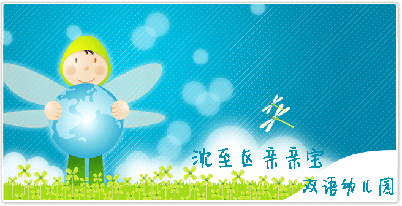
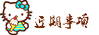

中秋节放假按国家规定为期三天，分别为9月15、16和17日，即周四、周五和周六，周日照常上课。预祝您节日愉快！

中秋节放假按国家规定为期三天，分别为9月15、16和17日，即周四、周五和周六，周日照常上课。预祝您节日愉快！

家长您好！经过近三周的幼儿园生活，孩子们到现在已经了解了一些幼儿园的常规，也认识了一些好朋友；对老师也很熟悉了。为了避免因放假时间较长，开学时影响孩子情绪。建议您在家经常和孩子聊聊幼儿园的事情。例如：幼儿园的老师；小朋友或者幼儿园的玩具等等。路过幼儿园时可以让孩子停留一会，增强孩子对幼儿园的感情。